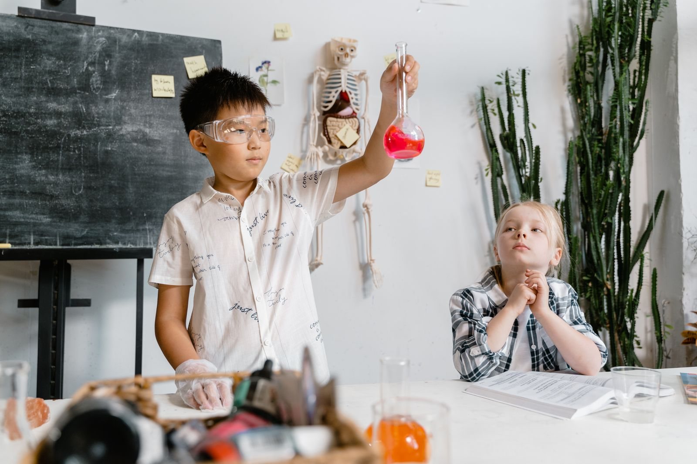

Request by QR code
QR code
to be supplied
to be supplied
Placeholder only. An approved QR code has not been supplied.
Your first visit
A trial class is a chance to get a feel for Wonderlab’s Maths or Science tuition and whether it feels right for your child.
Come curious
We’d love to hear your child’s level and what you hope they’ll get from Maths or Science tuition. After you request a trial, Wonderlab will share available trial slots and timings directly.
01 A welcoming introduction to the learning environment
02 A chance to ask questions about the programme
03 Clear information before you make a decision

Trial fees, duration and confirmed dates have not been supplied. Available trial slots and timings will be shared directly after you request a trial.
Request a trial by email ↗No pressure, just a conversation